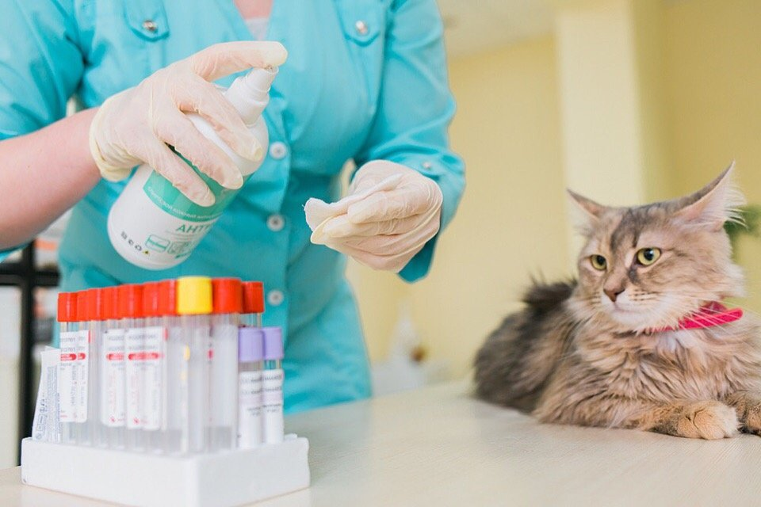
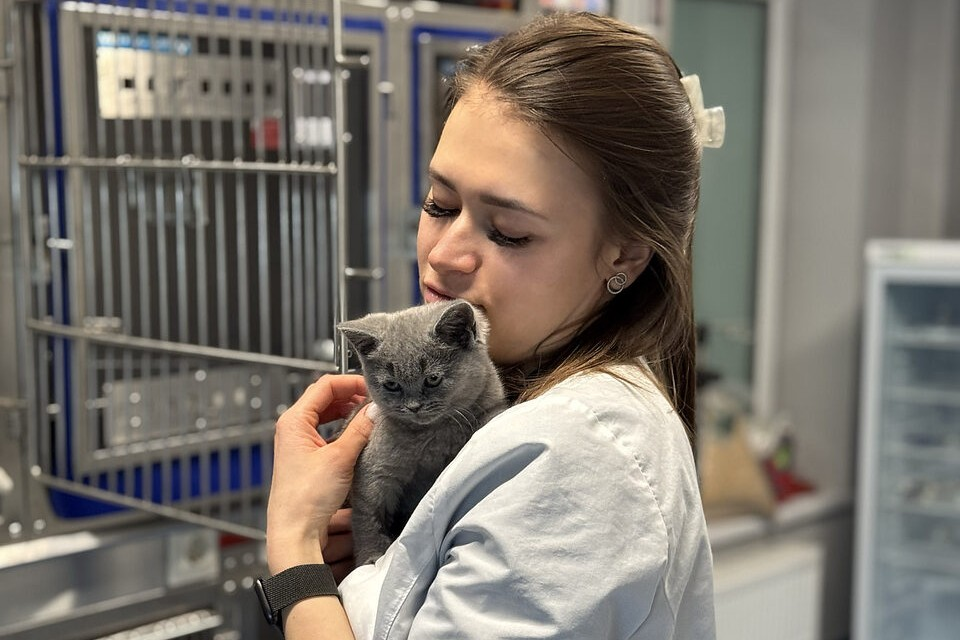
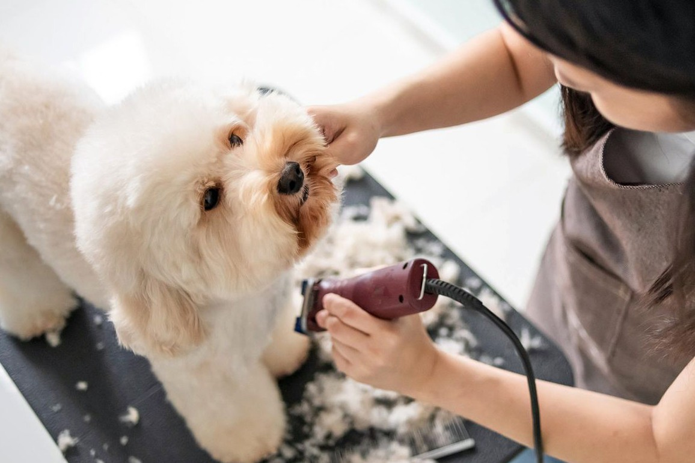

О нашей организации
Наши основные услуги

1. Лечение и диагностика
Наша клиника предлагает полный спектр медицинских услуг: от первичного осмотра и вакцинации до сложных хирургических операций. Современное оборудование для УЗИ и рентгена позволяет нам быстро и точно поставить диагноз вашему питомцу.

2. Скорая помощь 24/7
Мы работаем круглосуточно и без выходных, чтобы прийти на помощь в самый критический момент. Экстренная хирургия, интенсивная терапия и собственный стационар обеспечивают непрерывный контроль за состоянием тяжелобольных животных.

3. Груминг и гигиена
Здоровье начинается с правильного ухода. Наши специалисты проводят бережные гигиенические процедуры: стрижку шерсти и когтей, чистку ушей и зубов ультразвуком. Мы используем только профессиональную и безопасную косметику.